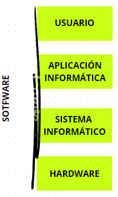

- Usario
- Equipo
Intervienen:
Todo sistema informático se puede contenplar desde dos aspectos: Su descripción física y su funcionalidad.
Volver al índiceEstructura básica de un oredenador
Como ya se adelantó en el punto anterior un sistema informático está formado por hardware y software (componentes lógicos) y humanos (humanware)
- Humanware variado de personas encagadas de desarrollar o gestionar el sistema, conocidos como profesionales informáticos o también pueden ser humanware los usuarios informáticos cuyo objetivo es aprovechar las aplicaciones del sistema.
Funcionamiento básico de un oredenador.
Un sistema informático maenja información de todo tipo (números, imagenes, video), dandole entrada, salida o procesandola puesto que toda información se reperesenta de manera binaria se utilizan las siguientes medidas:
- Bit reperesenta un dígito 1
- Byte conjunto formado por 8 Bits Volver al índice >
- Bit
- Byte = 8 Bits
- KBytes(KB) = 1024 Bytes
- MgByte(MB) = 1024 KB
- GigaBytes(GB) = 1024 MB
- TeraBytes(TB) = 1024 GB
- PetaBytes(PB) = 1024 TG
Conversión
ESTANDARES DE LA INFORMACIÓN
Desde los inicios de la informática la tecnologia de la informacion ha sido .... por la falta de documentación sobre el tema.
Hoy en dia existen numerosos estadandar para tal fin.
Un estándar es un conjunto de especificaciones que regulan procesos como la fabricación de componentes en nuestro caso para garantizar la interoperabilidad.
Los números se almacenan según su tipo (natural, flotante, etc) usando distintos sistemas de representación numérica.
Ejemplos: exceso de avase.
Para el caso del texto se codifica cada caracter con una cadena
El código ASCII ha sido durante mucho tiempo el más empleado.
Inicialmente utilizaba 7 bits para representar texto, por lo tanto era capaz de codificar 148 caracteres.
Por ejemplo: 1000001 = A
Poco después sufrio un problema porque era suficiente para los caracteres de lengua inglesa pero no para los de lengua hispana.
Entonces se añadió un 8º bit para poder representar 254 bits y pasó a llamarse ASCII extendido.
El estandar unicode puede usar 4 bytes.
Estructura funcional del sistema.
Volver al índice
El elemento central del hardware de un S.I. es la CPU (Central Procces Unit).
El modelo básico de arquitectura que se emplea en los computadores fue establecido en 1946 po John Newman.
Su aportación más significatiba fue la de contruir una computadora con programa almacenado en memoria, ya que los existentes hasta entonces trabajaban con programas cableados.

La idea de jhon fue aumentar la memoria de las unidades de las computadoras siendo coordinado su funcionamiento por un elemento de control.
Esta tecnología sigue estando vijente en la actualidad pero con pocas modificaciones haiendolo el más usando por los fabricantes.
Se distiguen 4 uidades clásicas:
-
Unidad de control (UC): que disponde de 2 registros principales:
- El program counter(contador de programa(CP)) en este registro se almacena la dirección de la instrucción.
- El registro de instrucción (RI) se guarda la intrusción que se va a ejecutar al momento
-
Unidad Aritmetico Lógica (ALU) (Arimetic Logic Unit) con diversos registros para llevar a cabo las distinta operaciones:
- Registro de acumulador (RA)
- Registro (RE)
-
Unidad de memoria tambien con dos registros
- Registro de dirección (MAR)
- Registro de palabara (RDM)
- Unidad de entrad y salida
Con este modelo se pueden ejecutar una serie de instrucciones elementales en lenguaje máquina, dependiendo de cada procesador.
Que deben de estar almacenadas en memoria principal para ser leidas y ejecutadas.
El que se puedan ejecutar varios programas hacía que este tipo de máquinas fueran llamadas máquinas de proceso general.
Cada elemento de esta arquitectura tenia una determinada función y era inprescindible y se comunica con lois elementos del sistema para conseguir sus elementos y su objetivo es
Unidad de Control (UC)
La UC tiene como objetivo leer las instrucciones maquina almacenadas en la memoria principal.
Para conocer la posicon de memoria en la que está almacenada la siguiente instrucción existe un registro apuntador llamado Progrma Counter (PC) que contiene dicha informacion.
Otra importante es el RI (registro de instrucción) contiene la instrucción que se debe ejecutar en cada momento.
La unidad aritmetico lógica se emplea para llevar a cabo una serie de operaciones elementales. Tales como : sumar, restar o operaciones logias como AND, OR, XOR. etc.
La ALU tiene su propiao registro para hacer estos calculos.
La memoria principal formado por un grupo de celdas de igual tamaño que se identifican de forma idividual a través de una dirección y sobre las que se podian realizar tareas de leer o escribir.
Aquí tenemos dos registros muy importantes que son Registro de dirección de memoria (MAR) y el registro de palabra (RDM).
Cada uno va por su respecitivo bus el MAR va por el de dirección y el MDR por el de datos.
Cada celda está formado por un conjunto de bits denominandose palabra de memoria, que son el elemento básico de información y cuyos valores 0 y 1 están atados a estado de tensión diferentes.
A la memoria se accede a traves de unos registros integrados en el microprocesador llamado MAR (Memory Address Release) y el MDR.
MAR ( )
El MAR es un registro específico de alta velocidad integrado en el microprocesador, este registro tiene la dirección del dato que se quiere leer o escribir en memoria.El registro está conectado con el bus de direcciones (es unidireccional) y su contenido se refleja en ese bus. El número de direcciones que se pueden direccionar con una CPU depende del tamaño del MAR, si el MAR tiene x de tamaño se podrán direccionar 2 a la x
Volver al índice
MDR ( )
Es un registro especifico de alta velocidad y de poca capacidad, está conectado al bus de datos, y através de él, la CPU lee o escribr un dato ambiguo y ki es decir para acceder a una celda de memirua hay que depositar otrave el MAR y se recoje el dato en MDR conenctado a l bus de datos.
Si lo que quiero es ecribir en memoria se depositará en el MAR la direccion de donde quiero escribir y el el MDR se depositará el dato.
A su vez el microprocesador dispondrá de otra serie de registros de porpósito general con el fin de llevar a cabo las instrucciones. Por ejemplo el PC, el IR(registro instrucion), el MAR , el MDR y registros de porposito general, estos registros forman parte del primer nivel de memoria siendo esta la más rápida del computador.
Unidad Arimetco Lógica (ALU)
´ Volver al índice
Unidad de Entrada-Salida
Las unidades de entrada-salida llegvan a cabo la transferencia de información a través de los canales asociados a dichas unidades externas.
Pueden estar formadas por memorias auxiliares o secundarias como discos de gran capacidad y otras llamadas periféricos que permiten la comunicación entre el sistema y el medio exterior.
Buses
Son caminos a través de los cuales circulan las instruciónes y los datos entre las distintas unidades del ordenador. Hay por tanto un bus de direcciones (unidireccional) y un bus de datos (bus de datos).
La función principal de un ordenador es ejecutar programas y por lo tanto este esquema va encaminado a tal fin.
Un programa es un conjunto de instrucciónes y datos que son almacenadas secuencialmente en posiciones o direcciónes sucesivas de memoria y que serán ejecutadas una detras de otra.
El funcionamiento del ordenador consistirá en ir extrayendo sucesivamente instrucciónes de la memoria principal, interpretarlas, extraer de memoria los datos empleados en la operación (operandos) y enviarlos a la unidad que realiza las operaciones (ALU).
Unidad central de procesos (UCP)
La Unidad Central de Proceso o Central Processing Unit (CPU) o procesador es el componente central del ordenador, encargado de procesar la información y de dirigir la actividad de todo el sistema informático Está formada por:
- Unidad de Control (UC): Lee, interpreta y ejecuta las instrucciónes del programa activo
- Unidad Aritmético Lógica (ALU): Ejecuta las operaciones lógicas
- Zona de registros y almacenamiento: donde se guardan los datos que se están procesando.
Son también elementos característicos de la CPU la frecuencia de reloj (marca el ritmo de ejecución de instrucciones), la longitud de palabra de memoria o datos y la tecnología empleada (RISC/CISC)
La Unida Aritmético Lógica o (UAL/ALU)
Tiene como función la ejecución del conjunto de operaciones lógicas (AND,OR,NOT...) y aritméticas propias del ordenador. Se compone de registros y un conjunto de circuitos lógicos encargados de realizar dichas operaciones.
Volver al índiceLa Unidad de Control (UC/CU)
Se encarga de governar el ordenador, para ello recive e interpreta las instrucciónes que se van a ejecutar, normalmente esas instrucciónes se transforman en una serie de microsinstrucciónes de bajo nivel, dependientes de la arquitectura del procesador La unidad de control dispondrá de una serie de circuitería necesaria para leer la dirección de memoria de la siguiente instrucción a ejecutar, la localizará y la guardará en el registro de instrucción (IR), a partir de aquí hay dos posibilidades de unidad de control:
- UC Microprogramada: Las instrucciónes están implementadas mediante una memoria de control que contiene microprogramas asociados a microinstrucciónes en las que se descomponen
- UC Cableada: Las instrucciónes están implementadas por hardware, son más rápidas y más caras y menos adaptadas a actualizaciónes.
Frecuencia de reloj
El ordenador funciona de forma sincrona o sincronizada siguiendo una secuencia ordenada de operaciones en el tiempo, para ello necesita de un reloj que se encarga de generar impulsos, de esta forma marca el principio, la duración y el final de cada operación, dicho número de impulsos se mide en millones por segundo o MHz, la frecuencia de reloj determina la velocidad en la transferencia de un dato entre dos dispositivos conectados al mismo bus.Para la transferencia completa de un dato pueden ser necesarios varios ciclos de reloj, en cada uno de los cuales son ejecutadas las operaciones más elementales de dicha transferencia.
La frecuencia de reloj solo es útil para comparar prestaciones entre microprocesadores de la misma familia y un mismo fabricante ya que existen otros muchos factores que determinan la velocidad y el rendimiento de una computadora, para comparar máquinas de distintas familias se emplean programas de benchmark.
Longitud de palabra de datos
Determina la cantidad de información que es capaz de procesar simultaneamente la CPU (Unidad de Control) en cada pulso de control, se mide en bits a mayor longitud de palabra mayor complejidad y circuitería a emplear en la CPU, pero mayor será la potencia del proceso
Volver al índiceLa ejecución de instrucciónes
Toda instrucción máquina residente en memoria principal pasa por una serie de fases que van desde su captura a su interpretación y ejecución, estas fases son:
- Carga/Busqueda/Captura (Fetch): La unidad de control envia a la memoria principal la dirección de la instrucción a ejecutar que está almacenada en el registro contador de programa (PC) y activa las señales de control necesarias para que la memoria entregue la mencionada instrucción.
- Decodificación: La unidad de control recive la instrucción, la analiza y en su caso lee los operandos de la memoria principal, enviando su dirección y activando las correspondientes señales de control
- Ejecución: La ALU bajo las ordenes de la unidad de control realiza la operación sobre los operandos y si es necesario se graba el resultado en la memoria principal o en un registro
- Incremento del contador de programa (PC): También denominado puntero de instrucción, de este modo se puede pasar a ejecutar la instrucción siguiente, aunque existen instrucciónes que pueden modificar el contenido del PC, dando lugar a bifurcaciónes.
Arquitectura del procesador
Juego de instrucciones
La forma de representación de una instrucción para ser almacenada en memoria, se denomina formato de instrucción, dicho formato especifica el significado de cada uno de los bits que constituyen la instrucción denominandose longitud del formato al nº de bits que la compone, para sinplificar la intrucción se divide en una serie de campos(cadenas de bits contiguos) estando referido cada campo a un tipo de informacion en especifico hay dos tipos de informaciones :
- La operación que hay que realizar (código de operacón)
- Con que o con quien, recibe el nombre de especificación de los operandos
Criterio de longitud de palabra
Procurar que el nº de bits de la intrusción sea lo más corta posible, ya que cuanto más pequeña es ocupa menos espacio en memoria y en tiempo de ejecución sea más rápido.
La palabra de memoria tiene que ser igual o múltiplo que la longuitud de los registros.
Que la longitud de la palabra de instrucción se fiaj o variable es otro criterio a decidir se tiende a que sean fijas.
Hay que dejar espacio suficiente para poder codificar todas las operaciones.
Se busca la independecia entre los módulos de direcciones y almacenamietno. Los códigos de operación son
-
Ejemplo de instrucciones de longitud variable
- Es el típico caso en el que código de operación especifica el n1 de operandos, cuando más operandos tenga, más larga será la insturcción, primero se lee el código de instrucción y en función de este se va leyendo los operandos, es el ejemplo de la máquina VAX (casc), en este el código de operación tiene una longitud fia de 8 bits(2 8= 512 ins) y una vez leido el cod operación se van asignando los operandos que suelen ocupar 8 bits, tiene una longitud de 8 bbits además hay 8 bits adiccionales por cada bando, Los formatos del VAX se caracterizan por tener instrucciones de longuitud variable siendo sin embargo su código de intruccion fija.